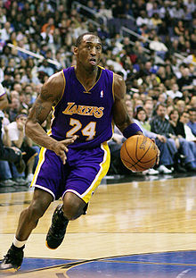

Kobe Bryant
(Black Mamba)
Eterna lenda dos Lakers

Kobe Bryant era filho caçula, nascido no condado de Filadélfia, no estado americano da Pensilvânia.
Aos seis anos, Kobe mudou-se com a família para a Itália, quando o pai deixou a NBA para jogar na Europa. Kobe recebeu influências fortes do basquete, além disso, passou a falar italiano e espanhol fluentemente. Lá conheceu a estrela do basquete brasileiro Oscar Schmidt e virou fã do ala da Seleção Brasileira. Kobe também teve contato com o futebol e passou a torcer para o time do Milan. Declarou mais tarde que, se tivesse permanecido por mais tempo na Itália, teria tentado se tornar jogador profissional de futebol. Era fã do brasileiro Ronaldinho Gaúcho.
Em 1991, Kobe voltou aos Estados Unidos. Não precisou passar por uma grande universidade para chamar a atenção dos olheiros da NBA. Em Lower Merion, subúrbio da Filadélfia, começou a se destacar. No segundo ano do ensino médio, foi treinado por seu próprio pai. Bryant declarou que se tivesse tentado ir para alguma faculdade, seria a Universidade Duke No recrutamento de 1996 foi escolhido pelo Charlotte Hornets e trocado, sem realizar nenhuma partida, para o time californiano Los Angeles Lakers.